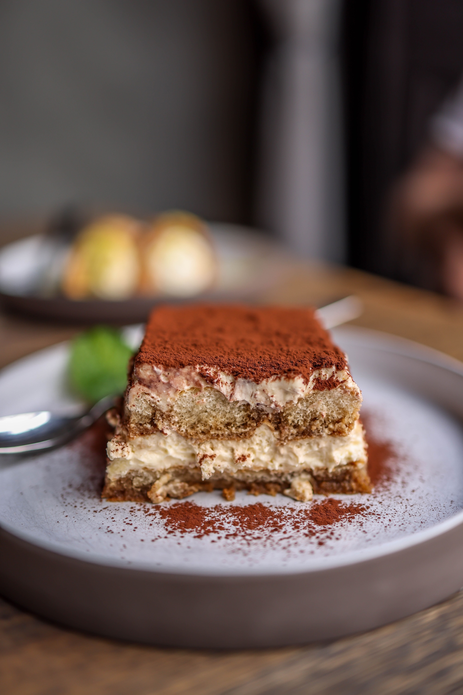

Tiramisù is a traditional Italian dessert consisting of layers of coffee-soaked ladyfingers, mascarpone cream and cocoa powder. Its modern form is closely associated with the city of Treviso, in Veneto, where it gained popularity during the 1970s, although its exact origins remain disputed between Veneto and Friuli Venezia Giulia. Its name literally translates to "pick me up", reflecting the energising combination of coffee, sugar and cocoa.
Having grown up in Veneto, tiramisù represents more than just a dessert to me. Its familiar combination of rich mascarpone, bittersweet coffee and delicate cocoa evokes a sense of nostalgia and affection for my regional culinary heritage. Its harmonious balance of flavours and textures demonstrates how a few simple ingredients can create an extraordinary dessert.
In its traditional form, tiramisù combines mascarpone, egg yolks, sugar, espresso, ladyfingers and unsweetened cocoa powder. However, its layered structure lends itself to creative interpretations inspired by other culinary traditions, such as Japanese matcha tiramisù, tropical coconut and mango tiramisù or Middle Eastern-inspired pistachio and cardamom variations. Modern twists include strawberry and white chocolate tiramisù, salted caramel tiramisù, and individual portions served in elegant dessert glasses.
Servings: 6
Preparation time: 30 minutes
Cooking time: None
Refrigeration time: At least 4 hours